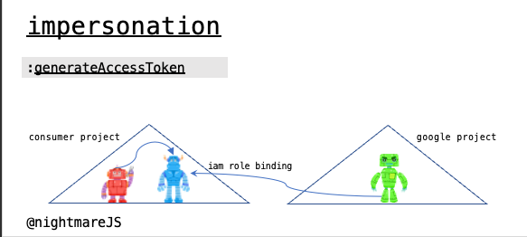
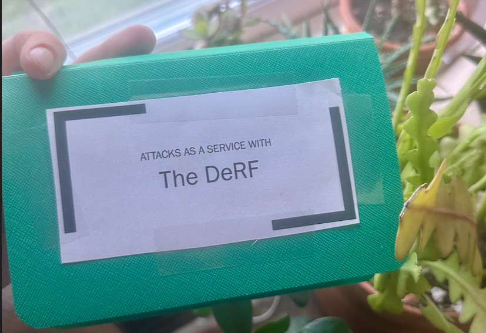
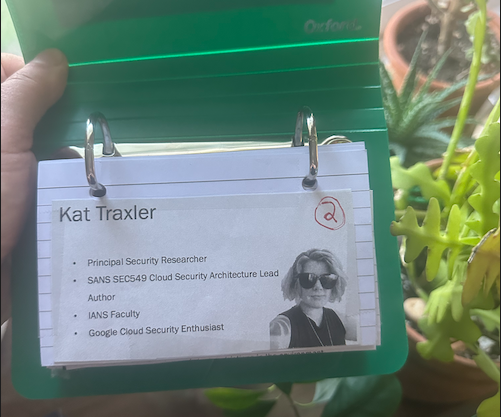
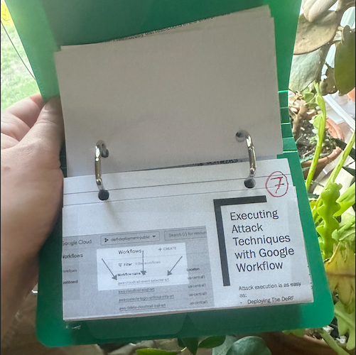
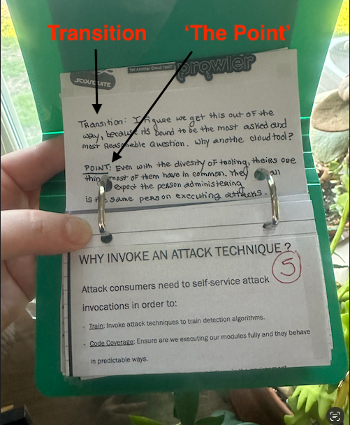

How I Prep for Talks – and You Can Too!
Recently, a friend admitted to me they were resorting to a ‘Hail Mary’ approach for their upcoming talk, scribbling notes on notecards like a nervous high school student. “But no! That’s actually a pro move,” I assured them, not just a desperate scramble to find order amidst chaos.
Inspired by that conversation, I’ve decided to pull back the curtain on my own process. This blog post isn’t about the research or ideation phase. Instead, I’ll dive into the preparation phase - how I build a structure and flow to ensure my presentations are memorable and prepare for delivery.
In the Beginning
You haven’t lived until you’ve bombed a talk.
Back in 2017, I was deep into exploring JavaScript for cryptographic operations. Encouraged by the great and good Michael Goetzman, I submitted a proposal to speak at CypherCon. Excited, I named my presentation ‘JavaScrypto’.
However, when the moment to shine arrived, I froze. The audience’s intense stares and the pressure to perform turned my mind into mush. I stood speechless for what felt like an eternity, camera rolling, until I finally managed to gather myself. Although I eventually got through the presentation and even stepped away from the podium for a bit, the technical complexity of my content wasn’t truly engaging—it was too obscure, a common misstep in the earlier stages of my career.
This experience was a turning point for me. I resolved to prepare more thoroughly and ensure my future presentations were enjoyable—for both myself and the audience. After all, if you’re having fun, your audience will too.
The Outline
All well-thought-through presentation structures begin with an outline. My talk outlines tend to be very dynamic, shuffling whole sections around and deleting content when it takes the audience down a divergent path.
In the outline:
- Primary Nodes: Each represents a slide.
- Nested Bullet Points: Include key talking points, ideas, and occasionally complete sentences if the phrasing is crucial.
One critical aspect of this phase is content elimination, a process I refer to as “killing your children.” It’s easy to become enamored with a turn of phrase, and this can blind us from the cold facts that while some content is good, not all content is relevant. Irrelevant details can distract the audience and detract from their trust in your narrative journey.
When designing the outline, I focus on:
- Narrative Flow: Ensuring the content crafts a compelling story. I aim to use familiar story archetypes like the Hero’s Journey or Rags to Riches, which are easily relatable and help the audience engage with the material.
- Logical Progression: Systematically building on the audience’s knowledge to enhance understanding and retention of the message.
The Slides
A picture is worth a thousand words. That’s why you’ll find very few words on my slides. Instead, they’re mostly filled with images and diagrams, ideally explicitly crafted for the content. Think of your slide as a canvas to which you add dialogue. Imagine you’re a museum curator standing in front of an artwork, using it as a backdrop to discuss the context of its creation.
Example of a slide which can be used as a backdrop to discuss impersonation in GCP:

The Notecards
Here’s where the magic (and a bit of arts and crafts) really starts to happen.
By this stage, there should have a relatively stable outline — though always feel free to tweak and trim as new inspirations strike - complemented by a set of engaging slides.
Done, right?
Not quite.
Ideally, reaching this stage 2-3 weeks before a major talk is perfect for beginning the prep phase.
Arts and Crafts
For every talk over the past five years, I’ve crafted a handy, spiral-bound booklet for my presentations, similar to this one:

I print each slide to scale, cut them out, and tape them onto a notecard. If I’m feeling extravagant, I might even print in color—though sometimes, using color feels like tempting fate, almost guaranteeing last-minute slide revisions.

Each notecard is labeled with its slide number in the upper right-hand corner. White-out is your friend if you have a last-minute rearrangements.

This crafting process results in a portable notecard booklet. It’s a practical tool that I can take anywhere, serving as a compact cheat sheet while I practice.
Remember, presentations unfold in the three-dimensional world, not just within the binary confines of our computers. Bringing your rehearsal into the physical realm is crucial, as it helps you learn how to occupy space while communicating your ideas.
Transitions and Main Points
Taking this practice aide a step further, I jot down critical notes on the back of each card.
-
Transition: On the back of each notecard, I write the transition sentence that leads the audience from one slide to the next. These are the only sentences I tend to fully memorize and deliver verbatim. Mastering these transitions helps with a smooth flow, guiding the audience through the story arch.
-
Main Point: I also summarize the main point of each slide on its card. This helps keep my delivery focused. While I might discuss the content extemporaneously for two to three minutes, being anchored to the main point prevents me from straying too far off course, allowing for a more natural presence on stage.

Resist the urge to write everything you want to say on the back of the notecards. Get comfortable with the content and what you want to say so you can speak spontaneously to any slide randomly.
When practicing your delivery, do so standing up, and if you only have small windows of time, always run through 2-3 slides at a time so you work through both main content and slide transitions.
Delivery
Finally, try to have some fun. It could be worse; you could be in freeze mode in front of an audience trying to demystify Javascript Cryptography to a bunch of nerds.